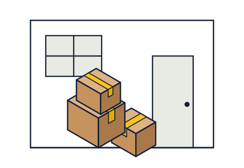

Tentang Titip Kos
Kami usaha kecil yang lahir dari masalah anak kos sendiri: mau pulang kampung, tapi barangnya mau ditaruh di mana?
Profil perusahaan
Titip Kos adalah usaha jasa penyimpanan dan pindahan barang untuk mahasiswa rantau di Semarang. Kami berdiri pada Juni 2026 dan beroperasi dari satu gudang di kawasan Genuk, dekat Kaligawe.
Pekerjaan kami sederhana: menjemput barang dari kos, mencatat dan memotret isinya, menyimpannya di rak bernomor, lalu mengantarnya kembali tepat pada tanggal yang disepakati. Selain penyimpanan saat libur, kami juga membantu mahasiswa yang pindah kos dan lulusan yang perlu mengirim barang ke kampung halaman.
Hampir semua anggota tim kami adalah mahasiswa atau baru lulus. Kami tahu rasanya mengemas barang satu kamar di malam sebelum naik bus pulang.
- Berdiri
- 20 Juni 2026
- Bidang usaha
- Penyimpanan barang, angkut pindahan, dan pengemasan
- Wilayah layanan
- Kaligawe–Genuk, Tembalang, Sekaran (Semarang)
- Gudang
- Genuk, Semarang · 48 m², 120 slot rak
- Pendiri
- Farah Dhiyaa
Awalnya lima kardus milik seorang teman
Libur semester genap 2025, teman satu kos Farah memutuskan tetap membayar kamarnya selama dua bulan. Ia pulang ke Lampung. Kamarnya kosong, tapi barangnya terlalu banyak untuk dibawa naik bus dan terlalu sayang untuk dijual.
Saat dihitung, isinya ternyata cuma lima kardus, sebuah kipas angin, dan kasur lipat. Untuk menjaga barang sebanyak itu, ia mengeluarkan uang sewa dua bulan penuh.
Dari situ muncul pertanyaan: kenapa harus menyewa satu kamar hanya untuk menjaga lima kardus? Februari 2026, Farah mulai bertanya ke teman-teman sekampus dan ternyata banyak yang mengalami hal serupa. Empat bulan kemudian, Titip Kos menjemput kardus pertamanya.

Menjadi tempat titip barang yang paling dipercaya mahasiswa rantau di Jawa Tengah pada 2030.
- Memotret dan mencatat isi setiap kardus di depan pemiliknya, tanpa pengecualian.
- Menjemput barang paling lambat dua hari setelah pesanan dikonfirmasi.
- Menjaga tarif titip satu kardus per bulan di bawah 5% rata-rata sewa kos di sekitar kampus.
- Membalas pesan pelanggan paling lama 15 menit selama jam layanan.
- Menjaga laporan kerusakan barang di bawah 1% dari seluruh kardus setiap musim libur.
Tujuan kami
Target yang ingin kami capai, dan cara kami mengukurnya.
Dipercaya di tiga kawasan kampus
- Menampung 1.000 kardus pada libur semester ganjil 2026/2027.
- Bekerja sama dengan 30 pemilik kos sebagai titik kumpul kardus.
- Semua pelanggan bisa mengecek status kardusnya sendiri lewat kode lacak di situs.
Hadir di kota pelajar lain di Jawa Tengah
- Membuka gudang kedua di Semarang bagian selatan, lalu menyusul di Solo dan Purwokerto.
- Menyediakan perlindungan barang (asuransi) sebagai bagian standar setiap titipan.
- Memberi pekerjaan paruh waktu bagi 50 mahasiswa setiap musim libur.
Empat kata yang kami pegang
Nilai ini kami pakai untuk mengambil keputusan sehari-hari, termasuk saat ada masalah.
Dicatat
Setiap barang terfoto dan tercatat. Kalau belum dicatat, kami anggap belum kami terima.
Dijaga
Gudang selalu terkunci, diawasi kamera, dan hanya dibuka oleh petugas yang sedang bertugas.
Diantar
Tanggal antar yang sudah disepakati adalah janji, bukan perkiraan.
Dikabari
Kalau ada perubahan jadwal atau kendala, kamu yang pertama tahu, bukan yang terakhir.
Perjalanan Titip Kos
- Feb 2026
Ide muncul. Farah mengobrol dengan 40 mahasiswa rantau soal nasib barang mereka saat libur.
- Apr 2026
Menyewa gudang 6 × 8 meter di Genuk dan memasang rak bernomor.
- Jun 2026
Resmi beroperasi. Kardus pertama dijemput dari kos di Kaligawe.
- Agu 2026
Musim libur pertama selesai: 318 kardus kembali ke pemiliknya.
- Nov 2026
Membuka layanan Kotak Wisuda dan pendaftaran libur semester ganjil.
Struktur organisasi
Tim inti Titip Kos per November 2026.
Nama anggota tim selain pendiri adalah tokoh fiktif.